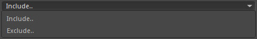
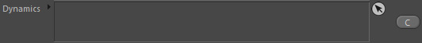
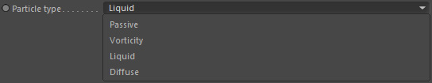
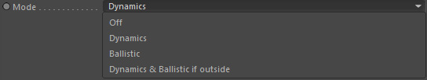
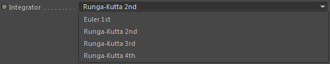
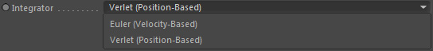
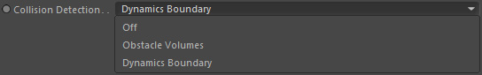

Parameters
Parameters
Particles

Define the particle group you would like to calculate advection, collision and aging for.
PIOPs
Drop here any PIOP (Particle Instant Operator) nodes to evaluate on collision here.
The operators are indeed called at the very moment when the collision takes place for a particle.
Inculde

Defines whether the 'Dynamics' list excludes the assigned nodes or includes them.
By default it excludes which means it will use any existing fluid dynamic nodes.
Dynamics

Define here any dynamic nodes (to read their velocity field) (ref)used for advection.
Particle type

Define which particle type (subgroup) of the input particle group to use.
Mode

Defines what kind of advection you would like to perform.
Off
Well, obviously none. No transport is calculated (and therefore no collision detection).
Dynamics
The velocity field of a dynamics node is sampled to drive the particle transport.
If you want particles to move in a fluid simulation, this is the mode to set.
Ballistic
The particle velocity and/or position (and old position) are used to calculate motions based on Newton's law or alike.
So similar to Thinking Particles and C4D's own particles.
Dynamics & Ballistic if outside
This uses 'Dynamics' if the particles are inside the given dynamics node's container box and otherwise uses the ballistic mode.
That way you can have particles keep on moving physically outside of the simulation space.
Integrator

Only if 'Mode' = Dynamics, Dynamics & Ballistic if outside
The velocity field from the dynamics node must be sampled for the transport. It can do this with more or less precision (taking more or fewer samples).
This is done by integrators while higher orders mean better quality.
Artist Version: this sets the quality of the particle transport.
Mathematical version: this defines the numerical integration method of ODEs.
Mathematical version: this defines the numerical integration method of ODEs.
Integrator

Only if 'Mode' = Ballistic
Defines the particle based (ballistic) transport method.
Each method integrates Newton's equation of motion but using different algorithms.
Euler (velocity-based)
This is a velocity-based approach which means only the velocity of the particles is required to calculate the physical motion.
The position and velocity properties will be updated.
Verlet (position-based)
This is a position-based approach which means only the position (and the old position*) of the particles is required to calculate the physical motion.
The position and the old position properties will be updated.
Note: make sure to attach an 'Old Position' particle property in your particle emitters if you use the Verlet mode.
Euler (Position-Based-Fluids)
This is a position-based approach which means only the position of the particles is required to calculate the physical motion.
This mode is specifically designed and used in conjunction with the Liquid Dynamics PBF node.
Substeps
Defines how many substeps are taken during the transport calculations.
More substeps result in better accuracy but also take longer to calculate.
Note:
These substeps have nothing to do with the Effex Scene substeps. If you want so, these are substeps inside of a substep only for the advection node.
These substeps have nothing to do with the Effex Scene substeps. If you want so, these are substeps inside of a substep only for the advection node.
Kill Outside Dynamics
Kills particles that end up outside the given dynamics container box.
Collision Detection

Defines against which obstacles the particles should collide.
Off
No collision detection calculated.
Obstacle Volumes
Calculates collisions with any volumes that are marked as an obstacle.
Dynamics Boundary
Same as 'Obstacle Volumes' but additionally checks collisions against the given dynamics node's container.
Even more, it uses a special obstacle field and therefore is faster than using 'Obstacle Volumes'.
Collision Margin
Defines a collision surface offset.